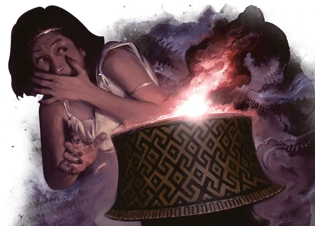

Пиксида Пандемония
Pyxis of Pandemonium
Чудесный предмет, легендарный

Рекомендованная стоимость от 50 001 зм
Существо, которое касается этой роскошно украшенной деревянной коробочки в течение 1 минуты, получает преимущества короткого отдыха. Это существо также получает эффект заклинания благословение [bless], пока оно не закончит короткий или продолжительный отдых. Существо не может получить эти преимущества снова, пока не закончит продолжительный отдых.
Если коробочка открыта, совершите бросок по таблице «Пиксида Пандемония», чтобы определить, что произойдёт. Любые заклинания, накладываемые ящиком, имеют Сл спасброска 17. Спустя 1 минуту после открытия коробочки она исчезает. Она вновь появляется запечатанной, в случайном месте на том же плане существования 24 часа спустя.
Проклятие. Любое существо, которое получает преимущество от короткого отдыха, даруемого коробочкой, слышит настойчивый телепатический шепот, исходящий от неё. Это существо должно совершить спасбросок Мудрости Сл 17. При провале существо становится очаровано сосудом на 1 час. Очарованное существо делает всё возможное, чтобы как можно скорее открыть сосуд. При успешном спасброске существо становится невосприимчивым к шёпоту сосуда на следующие 24 часа.
Пиксида Пандемония
| к8 | Бедствие |
| 1 | Андрофагия. Каждое существо в пределах 60 футов от коробки должно преуспеть в спасброске Мудрости Сл 17, иначе впадёт в безумие на 1 минуту. Безумец начинает свой ход, совершая действие Атака, чтобы совершить одну рукопашную или дальнобойную атаку (по своему выбору) против ближайшего к нему существа. Безумец может повторять спасбросок в конце своего хода, при успехе оканчивая на себе действие эффекта. |
| 2 | Желчная лихорадка. Коробка накладывает заклинание поражение [harm] на каждое существо в пределах 30 футов от него. |
| 3 | Наводнение. Коробка накладывает заклинание цунами [tsunami] в точке по выбору Мастера в пределах 120 футов от него. |
| 4 | Взгляд медузы. Коробка накладывает заклинание окаменение [flesh to stone] на каждое существо в пределах 30 футов от него. |
| 5 | Лабиринт. Коробка накладывает заклинание лабиринт [maze] на каждое существо в пределах 30 футов от него. |
| 6 | Ночной кошмар. Теневые щупальца просачиваются из коробки и трансформируются в 1к4 враждебно настроенных теневых демонов [shadow demons], которые появляются в незанятых пространствах в пределах 30 футов от него. |
| 7 | Рой насекомых. Коробка накладывает заклинание нашествие насекомых [insect plague] с центром на себе и с радиусом в 30 футов |
| 8 | Безудержное веселье. Коробка накладывает заклинание неудержимая пляска Отто [Otto’s irresistible dance] на каждое существо в пределах 30 футов от него. |